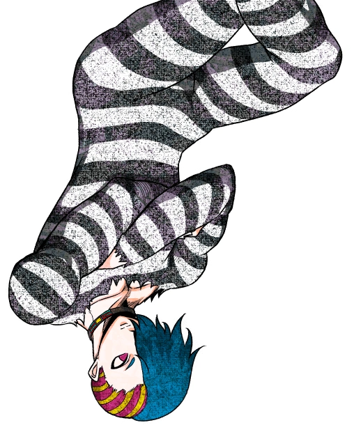
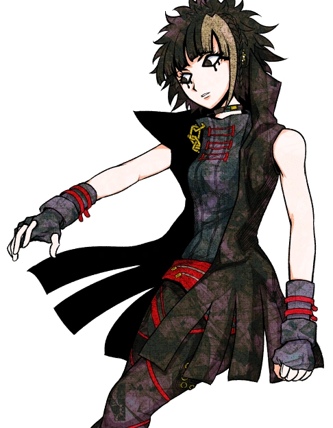

This game, named "Your Turn To Die: Death Game By Majority (Your Turn To Die or YTTD for short), made by Nankidai, is a Japanese horror RPG adventure game, with different routes that can be made with specific dialogue and actions. You play as Sara Chidouin, a high school student at Sonobeno High School. As the game progresses, you meet new characters and build bonds with one another, all the while trying to solve the puzzles and try to escape and survive whoever brought you into this death game.
There are two different routes the player can choose in the game based on their actions and words; the emotion route and the logic route. These two routes do not affect the plot itself, but rather the characters who end up living at the end of the game. Beware of any choice you make, because even the dialogue or actions you least expect might determine your ending.
 The first route is the emotion route. The emotion route is when the player (Sara) makes decisions based on..well, their emotion, including how much the player likes a character. The desire to keep a character alive is also a big point here, since wanting to keep one character alive more than another is the main aspect of this route.
The second route is the logic route. The logic route is making decisions based on the logic and the statistics of the situation, and making decisions based on what would be most reasonable. The player uses argumentation and a process of elimination in the logic route, causing the story to change.